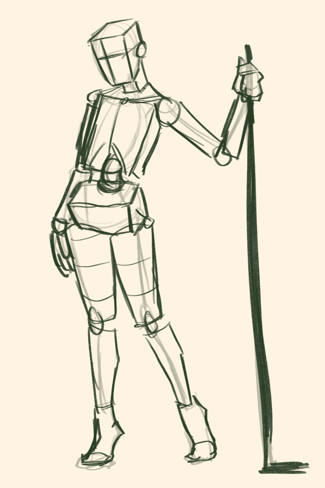

Anatomy & Figure Drawing
Drawing the human figure can be one of the most rewarding and challenging parts of learning art. The human body contains many complex shapes, proportions, and anatomical structures. However, you don't need to memorize every muscle and bone to begin drawing people!
By breaking the body down into simpler forms and understanding how those forms connect, you can gradually develop a stronger foundation for drawing figures.
Start with Gesture Drawing
Gesture drawing is a great starting point for learning how to draw people. Rather than focusing on small details, gesture drawing emphasizes the overall movement, rhythm, and energy of a pose.
Some important things to focus on include:
- Line of Action: A flowing line that helps communicate the main movement or direction of a pose.
- Rhythm: The flowing relationships between different parts of the body.
- Weight and Balance: Understanding how a figure supports its weight and interacts with gravity.
Try making quick gesture drawings using poses from reference photographs. Focus on capturing the movement rather than creating a perfectly accurate figure.
Simplifying the Human Figure
Once you've established the gesture, you can begin constructing the figure using basic three-dimensional forms.
Instead of trying to draw complicated anatomical structures immediately, think about how you can represent different parts of the body with simpler shapes:
- Head: An egg-like form or simplified box.
- Ribcage: An egg-shaped mass representing the upper torso.
- Pelvis: A simplified box or bowl-like form representing the hips.
- Arms and Legs: Cylinders and tapered forms that help establish their direction and volume.
- Joints: Simple connecting forms that help visualize how the limbs bend.
These simplified forms make it easier to understand the figure in three-dimensional space before adding anatomical details.

Notice how the figure is built using simple three-dimensional shapes rather than detailed anatomy. The guidelines help establish the direction of the head and limbs, while the larger forms create the overall structure of the pose.
Understanding Proportions
Proportions describe the relationships between the sizes of different parts of the body.
Artists sometimes use the head as a unit of measurement when studying human proportions. An idealized adult figure is often drawn around seven and a half to eight heads tall.
However, real human proportions vary, and different artistic styles may exaggerate or simplify them. These measurements are useful guidelines, not rules that every figure must follow.
Learning Anatomy
As you become more comfortable constructing figures, studying anatomy can help you understand how the body is built and how it moves.
Learning about the skeleton, major muscle groups, and how joints function can improve your understanding of the forms beneath the surface.
You don't have to learn everything at once! Start with larger structures like the ribcage, pelvis, and major muscle groups, then gradually explore smaller details.
Practice: Construct a Figure
Let's put these concepts into practice! Find a reference photograph of a person and follow these steps:
- Draw a simple line of action to establish the movement of the pose.
- Sketch the head, ribcage, and pelvis using basic forms.
- Add the arms and legs using cylinders or other simplified shapes.
- Check the overall proportions, balance, and direction of the figure.
- Refine your construction and add details once the larger forms feel established.
Remember, the goal isn't to create a perfect drawing. Focus on understanding how the body is constructed, and allow yourself to experiment and make mistakes!